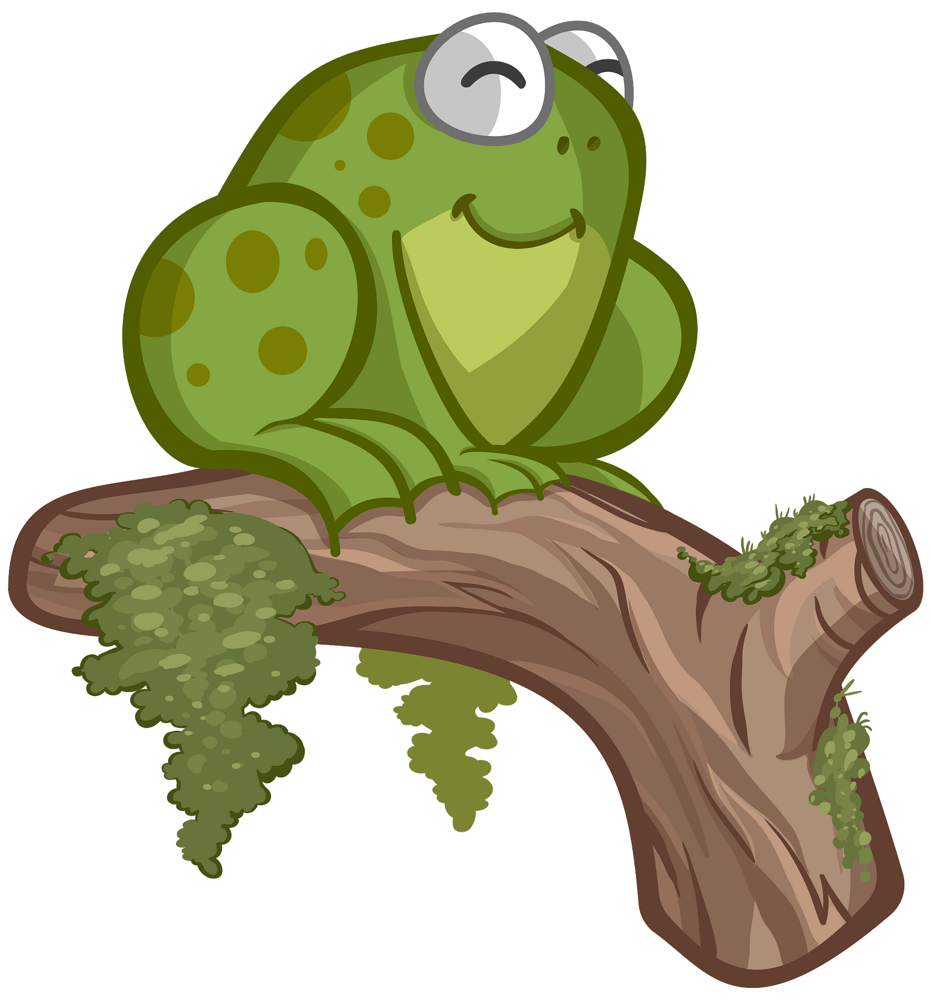
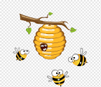
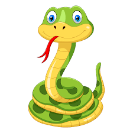

Тварини-це живі істоти, які добувають для себе їжу та ведуть активний спосіб життя. Тварини живуть по всій Землі, тобто всюди: у лісах, болотах, озерах, річках, морях, океанах та на інших містах суходолу. Є тварини які харчуються рослинами-їх називають травоїдними, також є тварини які харчуються м'ясом-м'ясоїдні. А деякі тварини взагалі їдять й м'ясо, і рослини-таких тварин називають всеїдними, тому що вони їдять все(м'ясо та рослини). До рослин також відноситься трава(трава-це також рослина). Усі тварини ростуть, але кожна тварина росте по своєму. Якась швидше, якась повільніше. Хтось виростає більшого розміру, а хтось меншого. Все це зависить від того яка це тварина та яка вона віком(який в неї вік).
Тварини поділяють на 6 груп:
| Звірі | Птахи | Риби |
|
|
|
| Земноводні | Комахи | Плазуни |
|  |  |  |
Зірі-це тварини, які живуть у воді, у ґрунті, на Земній поверхні та вміють літати в повітрі. У них є шерсть. Дорослі звірі харчуються м'ясом(м'ясоїдні) або рослинами та травою(рослиноїдні), а малята цих звірей харчуються переважно всі їхнім(батьків малят) молоком. Звірі живуть майже завжди там, де для них більш сприятливі умови для їхнього життя(це клімат, їжа, навколишнє середовище й так далі).
Птахи-це тварини, що живуть на Землі, вміють літати, мають пір'я та клюв(дзьоб) (на відміну від звірів). Також вони майже всі вміють вити(робити) їхні власні гнізда в яких найчастіше відкладають свої яйця. Птахи живуть в екосистемах Земної кулі(Землі), що знаходяться здебільшого від Арктики до Антарктики(включаючи в себе Арктику та Антарктику). Птахи харчуються насінням і плодами рослин(ягодами й таким іншим, комахами(мухами й так далі) та дрібними тваринами(черв'яками та іншими дрібними тваринами).